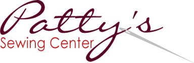

We are PBS for South Central Texas.
We get kids ready to learn and we give you opportunities to explore the world around you. We have been a trusted window to the world for over 50 years.
Become a SponsorKLRN has provided an avenue for people of all ages to see what is out there for sewing, crafting and embroidery. It is my primary source of marketing because it reaches a broad spectrum audience who are interested in my services and projects. The art of sewing, embroidery and crafting is a niche market and KLRN can reach that market through these programs.

Our viewers are the most educated, influential, cultural, and community-minded audience in South Central Texas.
There are many ways to get your message across to our large, highly desirable audience. Our viewers value your partnership with us, building a strong connection to you and the community - which often results in our viewers supporting your business.